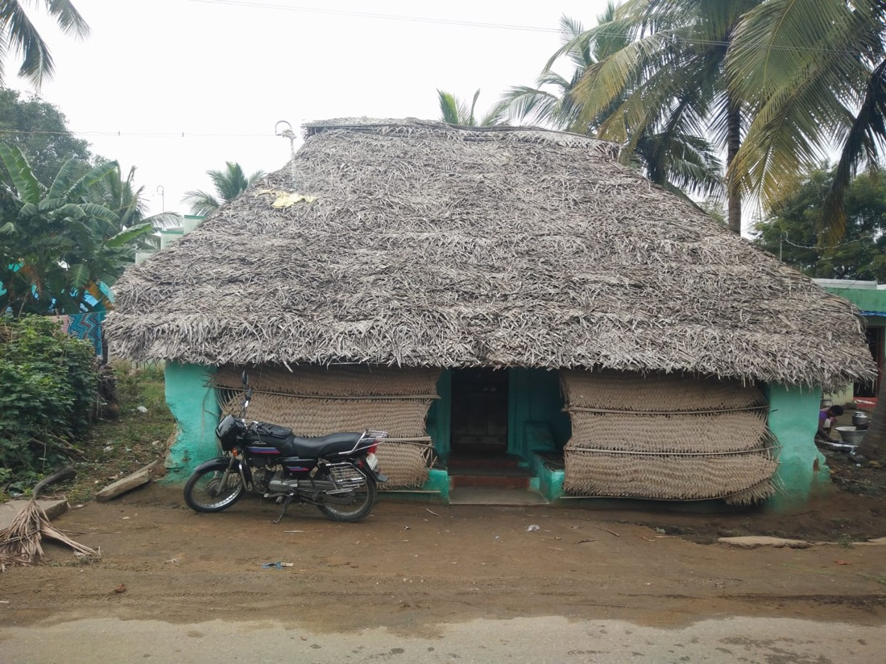
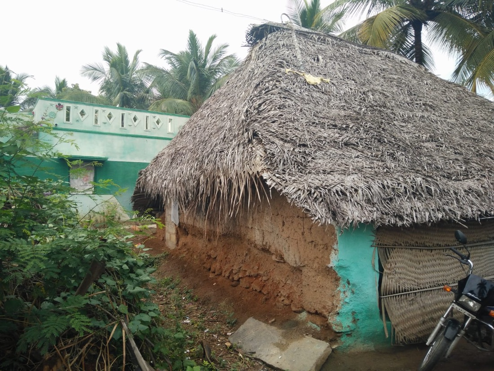
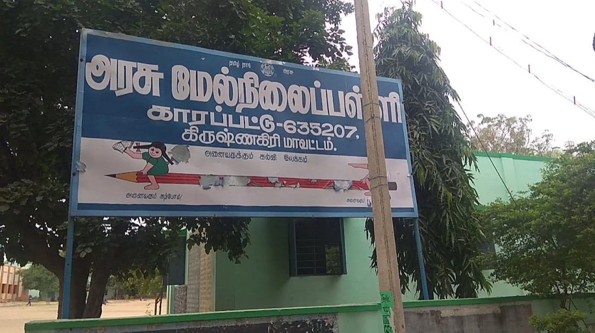
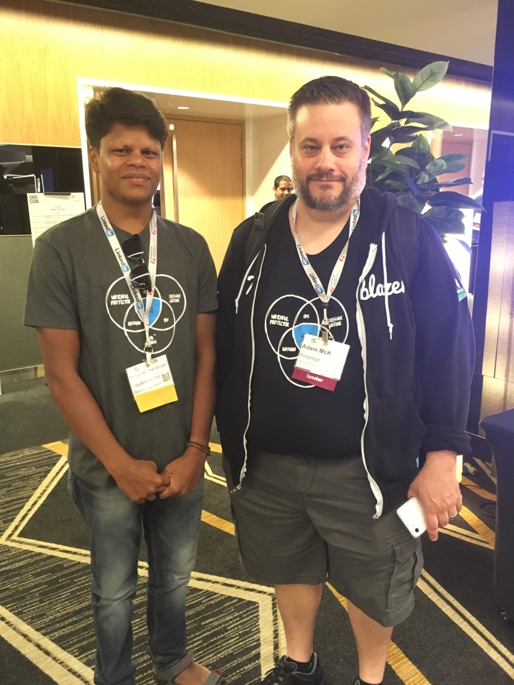
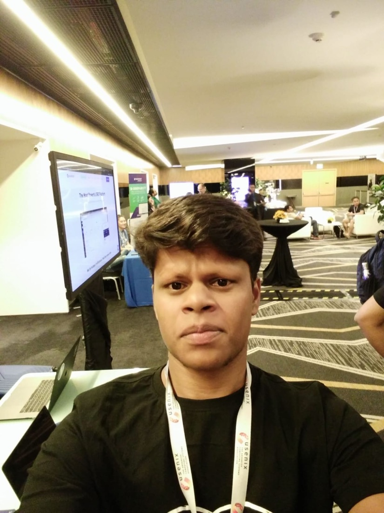
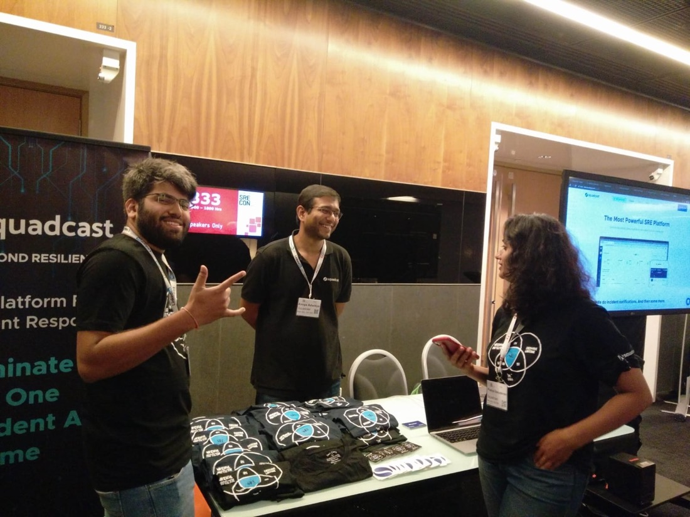
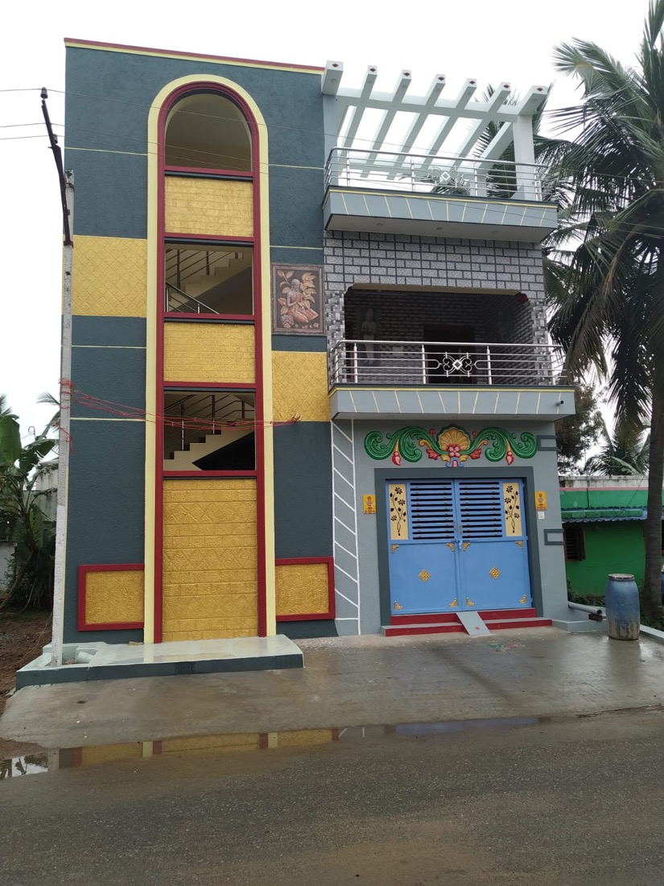
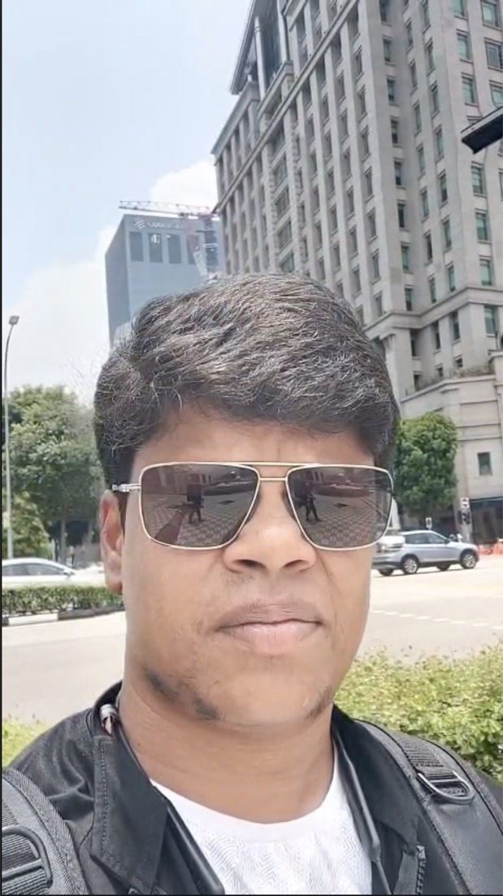
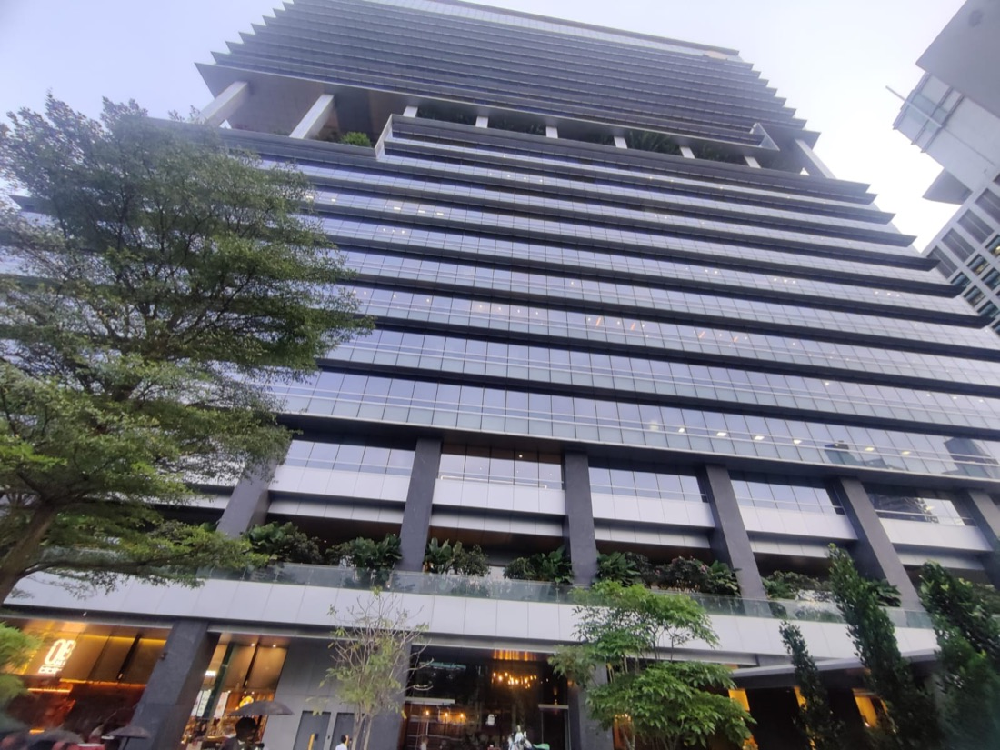
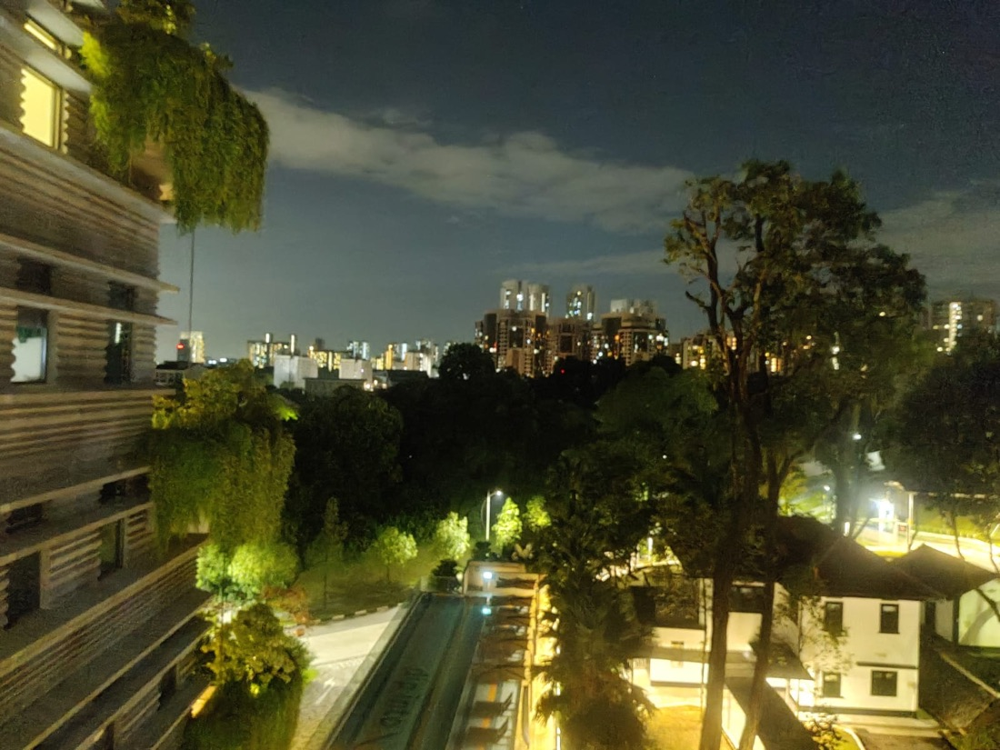

My journey
என் பயணம்
From a village in Krishnagiri to writing software.
கிருஷ்ணகிரி கிராமத்திலிருந்து மென்பொருள் உலகம் வரை.
I was born and brought up in K. Papparapatti, a small village near Uthangarai in Krishnagiri district, Tamil Nadu. I'm the first graduate in my family and the first software engineer from my village.
This is how it started.
நான் தமிழ்நாடு, கிருஷ்ணகிரி மாவட்டம், ஊத்தங்கரை அருகிலுள்ள கே. பாப்பாரப்பட்டி என்ற சிறு கிராமத்தில் பிறந்து வளர்ந்தவன். எங்கள் குடும்பத்தின் முதல் பட்டதாரி; எங்கள் ஊரின் முதல் மென்பொருள் பொறியாளர்.
இது எப்படித் தொடங்கியது என்றால்...
Where I come from
என் குடும்பம்
My father, Dharmalingam, is a welder and a farmer. My mother farms and looks after our cattle. I have two elder sisters and a younger brother. Nobody in the family had been to college before me, so every step was new for all of us.
என் அப்பா தர்மலிங்கம், வெல்டராகவும் விவசாயியாகவும் உழைப்பவர். அம்மா விவசாயமும் கால்நடை பராமரிப்பும் செய்பவர். எனக்கு இரண்டு அக்காக்கள், ஒரு தம்பி. எங்கள் குடும்பத்தில் எனக்கு முன் யாரும் கல்லூரிக்குச் சென்றதில்லை, அதனால் ஒவ்வொரு படியும் எங்கள் எல்லோருக்கும் புதிது.
-
Childhoodசிறுவயது
A kid with a billion dreams
கோடிக் கனவுகளுடன் ஒரு சிறுவன்
Before any of this, I was just a village kid. I played, roamed around the village, looked after the cattle and helped my mom. And I dreamed a lot. In my early years I wanted to be a JCB driver, because most of the people I knew were in that job. When I started school, I wanted to be a pilot, because planes flew so high. I had a billion dreams and no idea where to start. Just plain dreams.
இவை எல்லாவற்றுக்கும் முன், நான் கிராமத்தில் வளர்ந்த ஒரு சாதாரணச் சிறுவன். விளையாடுவேன், ஊரைச் சுற்றித் திரிவேன், மாடுகளை மேய்ப்பேன், அம்மாவுக்கு உதவுவேன். நிறையக் கனவு காண்பேன். சின்ன வயதில் JCB ஓட்டுநர் ஆக வேண்டும் என்று ஆசை, ஏனென்றால் எனக்குத் தெரிந்தவர்களில் பலர் அந்த வேலையில்தான் இருந்தார்கள். பள்ளிக்குச் செல்லத் தொடங்கியதும் விமானி ஆக வேண்டும் என்று ஆசை, ஏனென்றால் விமானம் அவ்வளவு உயரத்தில் பறந்தது. கோடிக் கனவுகள் இருந்தன, எங்கிருந்து தொடங்குவது என்றுதான் தெரியவில்லை. வெறும் கனவுகள்தான்.


The thatched house where I was born and brought up, until 2019.
நான் பிறந்து வளர்ந்த ஓலைக் கூரை வீடு (2019 வரை).
-
2008
The first computer
முதல் கணினி
I was in 10th standard at Government Higher Secondary School, Karapattu, when I saw a computer in person for the first time. That day I decided I wanted to be a software engineer.
பத்தாம் வகுப்பு படிக்கும்போது, காரப்பட்டு அரசு மேல்நிலைப் பள்ளியில்தான் முதன்முதலாகக் கணினியை நேரில் பார்த்தேன். அன்றுதான் "நான் ஒரு மென்பொருள் பொறியாளர் ஆக வேண்டும்" என்று முடிவு செய்தேன்.

Where I first saw a computer: Government Higher Secondary School, Karapattu. நான் முதன்முதலில் கணினியைப் பார்த்த இடம்: காரப்பட்டு அரசு மேல்நிலைப் பள்ளி. -
2008 – 2010
Finding a school with computer science
கணினி அறிவியல் உள்ள பள்ளியைத் தேடி
My school had no computer science group, so I moved to Government Higher Secondary School, Natham for 11th and 12th.
என் பள்ளியில் கணினி அறிவியல் பிரிவு இல்லாததால், 11, 12 ஆம் வகுப்புகளுக்காக நத்தம் அரசு மேல்நிலைப் பள்ளிக்கு மாறினேன்.
-
2010
₹5,000 and a C compiler
₹5,000 சம்பாத்தியம், C மொழி
After 12th, I worked for three months as a cleaner (helper) on a JCB. With the ₹5,000 I earned, I joined CSC Computer Centre and learned C and C++. Funny how life works: the kid who dreamed of driving a JCB did end up on one, just as the cleaner, and that job paid for his first step into computers.
12 ஆம் வகுப்புக்குப் பிறகு, மூன்று மாதம் JCB இயந்திரத்தில் உதவியாளராக (cleaner) வேலை செய்தேன். அதில் கிடைத்த ₹5,000 கொண்டு CSC கணினி மையத்தில் C, C++ கற்றுக்கொண்டேன். வாழ்க்கை எவ்வளவு வேடிக்கையானது: JCB ஓட்டுநர் ஆக வேண்டும் என்று கனவு கண்ட சிறுவன், உதவியாளராகவாவது அதில் ஏறினான்; அந்த வேலைதான் கணினியை நோக்கிய அவனது முதல் அடிக்குப் பணம் தந்தது.
-
2010 – 2014
Engineering degree
பொறியியல் படிப்பு
I studied B.E. Computer Science and Engineering at Anna University. I got my first laptop, a Dell Inspiron 15, and spent hours playing with operating systems and learning programming languages. I paid for Java classes at NIIT with money from part-time jobs like catering and stage decoration.
அண்ணா பல்கலைக்கழகத்தில் கணினி அறிவியல் மற்றும் பொறியியலில் B.E. படித்தேன். என் முதல் லேப்டாப் Dell Inspiron 15 கிடைத்தது; இயங்குதளங்களுடன் விளையாடி, பல நிரலாக்க மொழிகளைக் கற்றுக்கொண்டேன். கேட்டரிங், மேடை அலங்காரம் போன்ற பகுதிநேர வேலைகளில் சம்பாதித்த பணத்தில் NIIT-யில் Java கற்றேன்.
-
Apr – Jul 2014
Almost giving up
கிட்டத்தட்ட கைவிடும் நிலை
I finished my degree in April 2014. My college was a tier-3 college. I was strong in coding and problem solving, but my weak communication cost me a lot of opportunities. I gave dozens of interviews in Bangalore's competitive market and failed again and again. I got fed up and began to think I wasn't a qualified engineer, or wasn't suited for IT jobs.
But life has to move on. A few of my relatives worked in Singapore as skilled workers, which is why Singapore was my dream country. So I decided to go abroad as a skilled worker too. I applied for a passport and started arranging the money the agency needed.
At the end of July, I went to my college to collect my provisional certificate. I met my friends and professors and told them I was moving to Singapore for work.
2014 ஏப்ரலில் என் பட்டப்படிப்பை முடித்தேன். நான் படித்தது ஒரு tier-3 கல்லூரி. கோடிங்கிலும் பிரச்சனைகளைத் தீர்ப்பதிலும் நான் வலுவாக இருந்தேன்; ஆனால் என் பலவீனமான தகவல்தொடர்புத் திறனால் நிறைய வாய்ப்புகளை இழந்தேன். போட்டி நிறைந்த பெங்களூரு சந்தையில் டஜன் கணக்கான நேர்காணல்களுக்குச் சென்றும் மீண்டும் மீண்டும் தோற்றேன். சலித்துப் போய், "நான் தகுதியான பொறியாளர் இல்லையோ, இந்த IT வேலைகளுக்கே பொருத்தமில்லையோ" என்று நினைக்கத் தொடங்கினேன்.
ஆனாலும் வாழ்க்கை நகர வேண்டுமே. என் உறவினர்கள் சிலர் சிங்கப்பூரில் திறன்மிகு தொழிலாளர்களாக (skilled worker) வேலை செய்கிறார்கள்; அதனால் சிங்கப்பூர் என் கனவு நாடாக இருந்தது. நானும் அப்படியே வெளிநாடு செல்ல முடிவு செய்தேன். பாஸ்போர்ட்டுக்கு விண்ணப்பித்து, ஏஜென்சிக்குக் கொடுக்க வேண்டிய பணத்தை ஏற்பாடு செய்யத் தொடங்கினேன்.
ஜூலை இறுதியில், provisional certificate வாங்குவதற்காகக் கல்லூரிக்குச் சென்றேன். நண்பர்களையும் பேராசிரியர்களையும் சந்தித்து, சிங்கப்பூருக்கு வேலைக்குப் போகப் போவதாகச் சொன்னேன்.
-
Aug 2014
The last interview, and my first job
கடைசி நேர்காணல், முதல் வேலை
Then I got an interview call from PParkE. I told them this was the final interview I would give, and that I was going to leave Bangalore after it. PParkE only looked for a problem solver, and somehow I cracked it. I got my first job: full-stack developer at ₹7,500 a month.
I'm forever grateful to Sanu Stanly and Shampa Choudhury for giving me this opportunity and helping me kick-start my career.
There has been no looking back since.
அப்போதுதான் PParkE-இலிருந்து நேர்காணல் அழைப்பு வந்தது. "இதுதான் நான் கொடுக்கப்போகும் கடைசி நேர்காணல்; இதற்குப் பிறகு பெங்களூருவை விட்டுப் போகிறேன்" என்று அவர்களிடம் சொன்னேன். PParkE ஒரு பிரச்சனை தீர்ப்பவரை மட்டுமே தேடியது. எப்படியோ அந்த நேர்காணலில் வெற்றி பெற்றேன். முதல் வேலை கிடைத்தது: Full-stack developer, மாதம் ₹7,500.
இந்த வாய்ப்பைக் கொடுத்து என் வாழ்க்கைப் பயணத்தைத் தொடங்கி வைத்த Sanu Stanly மற்றும் Shampa Choudhury ஆகியோருக்கு என்றும் நன்றியுள்ளவன்.
அதன் பிறகு திரும்பிப் பார்க்கவே இல்லை.
-
2017
AirCTO: the steep learning curve
AirCTO: கற்றலின் உச்சம்
Working closely with the CEO, I built over 80% of the backend microservices. It was the steepest learning of my career, and it taught me how to own a system end to end.
CEO-வுடன் நெருக்கமாகப் பணியாற்றி, 80%-க்கும் மேற்பட்ட backend microservices-ஐ நானே உருவாக்கினேன். என் வாழ்க்கையில் மிகவும் வேகமாகக் கற்ற காலம் இது; ஒரு முழு அமைப்பையும் தோளில் சுமக்கக் கற்றுக்கொடுத்தது.
-
2018
Founding engineer at Squadcast
Squadcast-இல் Founding Engineer
I joined Squadcast as a founding engineer and backend lead. We architected the platform, moved from a monolith to microservices, scaled to millions of notifications, and I led a team of five.
Squadcast-இல் Founding Engineer மற்றும் Backend Lead ஆகச் சேர்ந்தேன். தளத்தின் கட்டமைப்பை வடிவமைத்து, monolith-இலிருந்து microservices-க்கு மாறி, மில்லியன் கணக்கான notifications-க்கு விரிவாக்கினோம்; ஐந்து பேர் கொண்ட குழுவையும் வழிநடத்தினேன்.
-
Jun 2019
SREcon19 Asia/Pacific, Singapore
SREcon19 Asia/Pacific, சிங்கப்பூர்
In June 2019 I went to Singapore, the country I once planned to move to for work, this time to attend SREcon19 Asia/Pacific. We showcased Squadcast and the tools we built to help SREs track their SLOs.
2019 ஜூன் மாதம் சிங்கப்பூருக்குச் சென்றேன். ஒரு காலத்தில் வேலைக்காகப் போக நினைத்த அதே நாடு; இந்த முறை SREcon19 Asia/Pacific மாநாட்டில் கலந்துகொள்ள. SRE-க்கள் தங்கள் SLO-க்களைக் கண்காணிக்க உதவும் Squadcast-ஐயும் நாங்கள் உருவாக்கிய கருவிகளையும் அங்கே காட்சிப்படுத்தினோம்.



SREcon19 Asia/Pacific, Singapore, June 2019.
SREcon19 Asia/Pacific, சிங்கப்பூர், 2019 ஜூன்.
-
Aug 2020
From thatch to a new home
ஓலைக் குடிசையிலிருந்து புதிய வீட்டுக்கு
I was born and brought up in a thatched house, until 2019. In August 2020, I built a new one.
2019 வரை நான் ஓலைக் கூரை வீட்டில்தான் பிறந்து வளர்ந்தேன். 2020 ஆகஸ்ட் மாதம், ஒரு புதிய வீட்டைக் கட்டினேன்.

The house I built in August 2020. 2020 ஆகஸ்ட் மாதம் நான் கட்டிய வீடு. -
Oct 2022
My first flash talk
என் முதல் flash talk
The boy who once feared interviews because of his communication stood on a stage at GopherCon India 2022 in Pune. It was my first ever flash talk, and I was nervous. I spoke about ADK, the Golang API Development Kit I built to make writing Go APIs easier. Post on X →
தகவல்தொடர்புத் திறன் குறைவு என்பதால் ஒரு காலத்தில் நேர்காணல்களுக்கே பயந்த சிறுவன், 2022-இல் புனேவில் நடந்த GopherCon India மேடையில் நின்றான். இது என் முதல் flash talk; மனதில் படபடப்பு இருந்தது. Go API-க்களை எளிதாக எழுத நான் உருவாக்கிய Golang API Development Kit ஆன ADK பற்றிப் பேசினேன். X பதிவு →
GopherCon India 2022, Pune. Watch on YouTube
GopherCon India 2022, புனே. YouTube-இல் பார்க்க
-
Sep 2023
The dream country, at last
கனவு தேசத்தில், இறுதியாக
In 2014 I was counting every rupee to pay an agency, hoping to reach Singapore as a skilled worker. In September 2023, after leaving Last9, I landed there again, this time as an engineer, invited to help a cybersecurity startup build its multi-cloud infrastructure from zero. For a month I worked across AWS, GCP, Azure, Linode, IBM Kubernetes and Docker.
On some nights I looked out over the city lights and thought of that boy from K. Papparapatti, the one who had failed dozens of interviews and was ready to walk away from this field. The same field he almost quit had carried him to the very city he once dreamed of. "One last interview," I had told myself in 2014. Everything after that has been a gift.
2014-இல் ஒவ்வொரு ரூபாயையும் எண்ணி, ஏஜென்சிக்குக் கொடுக்கப் பணம் சேர்த்துக்கொண்டிருந்தேன்; திறன்மிகு தொழிலாளியாகச் சிங்கப்பூர் போய்விட வேண்டும் என்பதே நம்பிக்கை. 2023 செப்டம்பரில், Last9-ஐ விட்டுப் புறப்பட்ட பிறகு, மீண்டும் அங்கே சென்றேன்; இந்த முறை ஒரு பொறியாளராக, சைபர் பாதுகாப்புத் துறையைச் சேர்ந்த ஒரு ஸ்டார்ட்அப்பின் multi-cloud உள்கட்டமைப்பைப் பூஜ்ஜியத்திலிருந்து உருவாக்க உதவ அழைக்கப்பட்டவனாக. ஒரு மாதம் AWS, GCP, Azure, Linode, IBM Kubernetes, Docker ஆகியவற்றில் பணியாற்றினேன்.
சில இரவுகளில் நகரத்தின் விளக்குகளைப் பார்த்தபடி, கே. பாப்பாரப்பட்டியைச் சேர்ந்த அந்தச் சிறுவனை நினைத்துக்கொண்டேன்: டஜன் கணக்கான நேர்காணல்களில் தோற்று, இந்தத் துறையை விட்டே விலகத் தயாராக இருந்தவன். அவன் விட்டுவிடத் துணிந்த அதே துறைதான், அவன் ஒரு காலத்தில் கனவு கண்ட அதே நகரத்துக்கு அவனை அழைத்து வந்திருக்கிறது. "இதுதான் கடைசி நேர்காணல்" என்று 2014-இல் நானே சொல்லிக்கொண்டேன். அதற்குப் பிறகு நடந்த அனைத்தும் எனக்குக் கிடைத்த பரிசு.
- AWS
- GCP
- Azure
- Linode
- IBM Kubernetes
- Docker



Singapore, September 2023.
சிங்கப்பூர், 2023 செப்டம்பர்.
-
Todayஇன்று
Senior Software Engineer at Kong
Kong நிறுவனத்தில் Senior Software Engineer
11+ years, three early-stage startups and a lot of Go later, I build agentic AI and platform services at Kong. See my experience →
11+ ஆண்டுகள், மூன்று ஸ்டார்ட்அப்கள், ஏராளமான Go குறியீடு. இன்று Kong-இல் AI மற்றும் பிளாட்ஃபார்ம் சேவைகளை உருவாக்குகிறேன். என் அனுபவம் →
If a kid from a small village with no computer lab can end up here, so can you. Start with whatever you can reach, a book, a class or a borrowed laptop. Keep learning, and the rest will follow.
கணினி ஆய்வகம் கூட இல்லாத ஒரு சிறு கிராமத்தில் படித்த நானே இங்கு வர முடிந்தது என்றால், உங்களாலும் முடியும். கையில் இருப்பதை வைத்துத் தொடங்குங்கள்: ஒரு புத்தகம், ஒரு வகுப்பு, இரவல் வாங்கிய லேப்டாப். தொடர்ந்து கற்றுக்கொண்டே இருங்கள்; மற்றவை தானாக அமையும்.
Manigandan